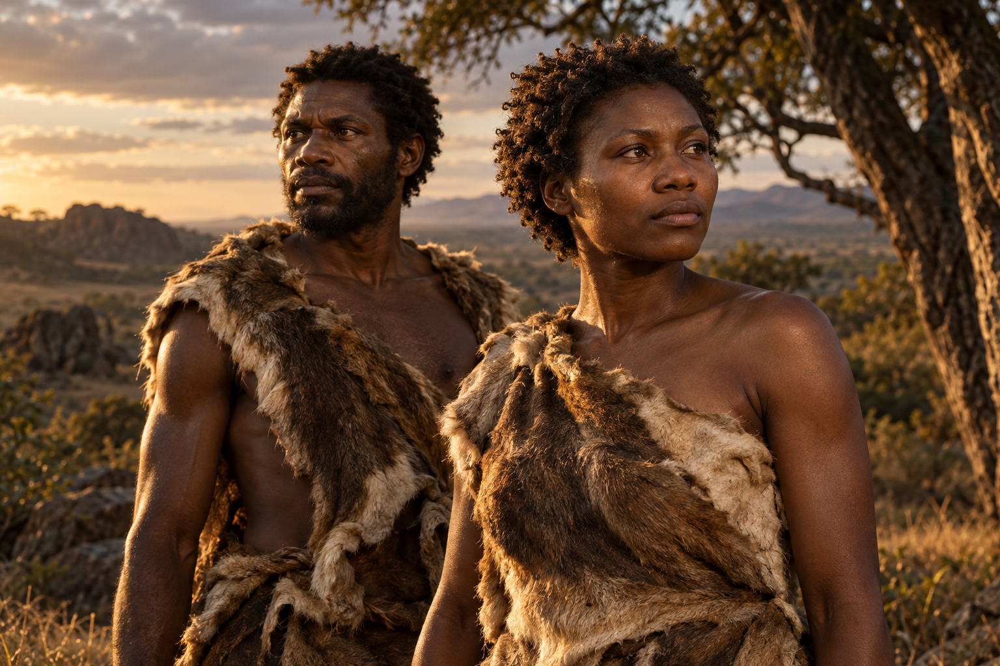

Made in Africa
Our species emerged in Africa around 300,000 years ago. Fossils reveal a story that stretches across the continent.
THE STORY OF US
Before cities. Before written words. There was us. Meet the early humans who began our extraordinary story.

01 / OUR EARLIEST CHAPTERDifferent lives.
Remarkably like us.
01 / A SHARED BEGINNING
Evolution happens across populations and generations. There was no single day, or known first couple, when humans suddenly appeared.
Our species emerged in Africa around 300,000 years ago. Fossils reveal a story that stretches across the continent.
Upright bodies and familiar faces existed alongside features that changed gradually over time.
Bones and tools offer clues. Faces, voices, personalities and everyday clothing need careful interpretation.
02 / TRACES THROUGH TIME
Every discovery adds another piece.
Select a moment to explore the evidence.
Fossils from Jebel Irhoud combine relatively modern faces with longer, lower braincases. The discoveries place early Homo sapiens in North Africa about 315,000 years ago.
Read the discovery ↗THE HUMANS / OUR DISTANT RELATIVES
Meet two imagined adults from the early story of our species. They represent possibilities, each a person with a life beyond the bones we find.
Strong brows, a familiar facial shape and an upright body. His exact height, skin, hair and expression are an artist’s interpretation.
A recognizably human face and body, interpreted from the wider fossil record. She is an imagined individual, rather than a known first woman.
LOOK A LITTLE CLOSER
Early Homo sapiens had a mosaic of traits. Select a feature to see what fossils can tell us.
01 / THE FACE
At Jebel Irhoud, the face was tucked beneath the braincase with delicate cheekbones. Stronger brows and larger teeth accompanied this relatively modern facial shape.
Explore the anatomy ↗Now, imagine them in your era.
Explore the time-travel lookbook ↗THEIR WORLD / OUR FIRST HOME
Early Homo sapiens lived in changing African landscapes. Follow three fossil sites for a glimpse of the places behind the discoveries.
Schematic locations · select a marker to explore
01 / MOROCCO
A North African cave site preserved early Homo sapiens alongside stone tools and animal bones. Their faces look surprisingly familiar, while their braincases are longer and lower.
Our early history extends across Africa, far beyond a single birthplace.